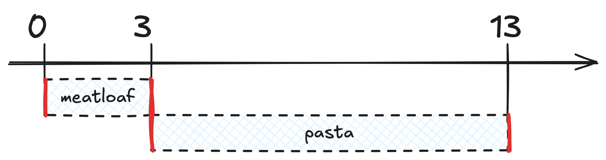

Preparing lunch#
Suppose you’re having pasta and meatloaf for lunch. You cooked the meatloaf yesterday, so you only need to microwave it for 3 minutes today. And the pasta takes 10 minutes to cook. How long will it take to you to prepare lunch?
If you turn your lunch prep into a function, it looks like this:
def lunch_prep():
put_on_apron()
meatloaf = microwave(Meatloaf())
pasta = cook(Pasta())
serve_food(pasta, meatloaf)
The function lunch_prep goes through the steps required to prepare your lunch:
put your apron on, to get ready
microwave the meatloaf to reheat it
cook the pasta
plate everything so you can eat
You can’t run this piece of code as-is, but you can turn your lunch prep into a full script by using the package kitchenkit:
from kitchenkit import *
from kitchenkit.prep import cook, microwave
def lunch_prep():
put_on_apron()
meatloaf = microwave(Meatloaf())
pasta = cook(Pasta())
serve_food(pasta, meatloaf)
if __name__ == "__main__":
lunch_prep()
Save this code in the file lunch.py and then run it with the uv command
% uv run --with kitchenkit lunch.py
If you do so, the output will look like this:
[00:00] INFO Let's get cooking! 🧑🍳
INFO Going to microwave the meatloaf.
[00:03] INFO The meatloaf is ready!
INFO Going to cook the pasta.
[00:13] INFO The pasta is ready!
INFO Finished cooking in 13 minutes. ✨
INFO Now serving: meatloaf, pasta
The timestamps on the left show why it takes 13 minutes to get your lunch ready. While the meatloaf is in the microwave, you’re just standing there, waiting. You could be doing something else, but instead you only take care of the pasta after the meatloaf is ready.
You can represent the two tasks as such:

The red lines at the start and end of each task represent the tiny work you have to do:
put the meatloaf in the microwave
take the meatloaf out of the microwave
put the pasta in a pot with boiling water
drain the pasta
The majority of the time is spent waiting. You can’t speed up the microwave by staring at it, neither can you speed up the cooking of the pasta. In other words, you can’t speed up any of the individual tasks.
And yet, you can get your lunch ready in less than 13 minutes.
How?